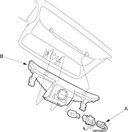
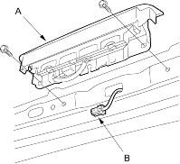
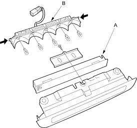

- Open the trunk lid and disconnect the 2P connector (A) from the high mount brake light (B).
High Mount Brake Light: 21 W

- Carefully remove the rear shelf (see page 20-65) and the high mount brake light.
- Install the light in the reverse order of removal.
- Open the tailgate and remove the tailgate upper trim (see page 20-209).
- Remove the two mounting bolts from the high mount brake light (A).

- Disconnect the 2P connector (B) from the light.
- Remove the screw and separate the lens (A) and housing (B).
High Mount Brake Light: 5 W x 5

- Clean the rear window glass and install the light in the reverse order of removal.